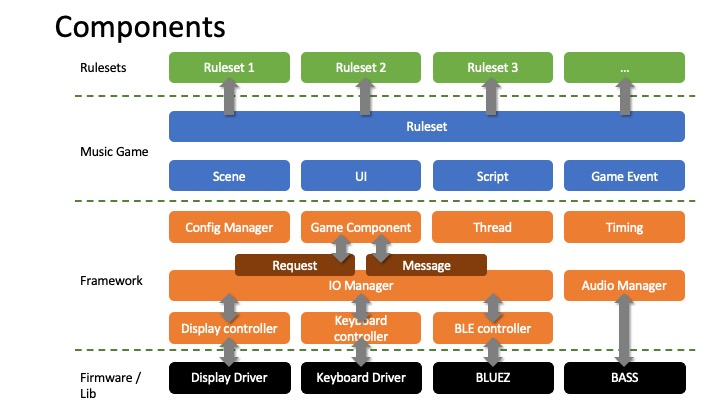

Components
最底層為 Firmware / Library，包含 Display Driver、Keyboard Driver、藍牙（BLUEZ）以及音訊系統（BASS），直接與硬體資源互動。其上為 Framework 層，負責系統核心能力與裝置抽象，包含 IO Manager、Display Controller、Keyboard Controller、BLE Controller 與 Audio Manager，並透過 Request / Message 機制進行模組間通訊，搭配 Thread 與 Timing 管理系統運行節奏。
再往上是 Music Game 層，涵蓋 Scene、UI、Script 與 Game Event，實現遊戲邏輯與互動體驗；最上層為 Ruleset 層，可擴充不同遊戲規則模組（Ruleset 1、2、3…），讓同一套底層架構能支援多種玩法。
整體設計強調模組化、可擴充性與層級清晰分離，使軟體邏輯與硬體實作有效解耦，便於功能演進與多規則擴展，同時維持系統穩定與可維護性。
